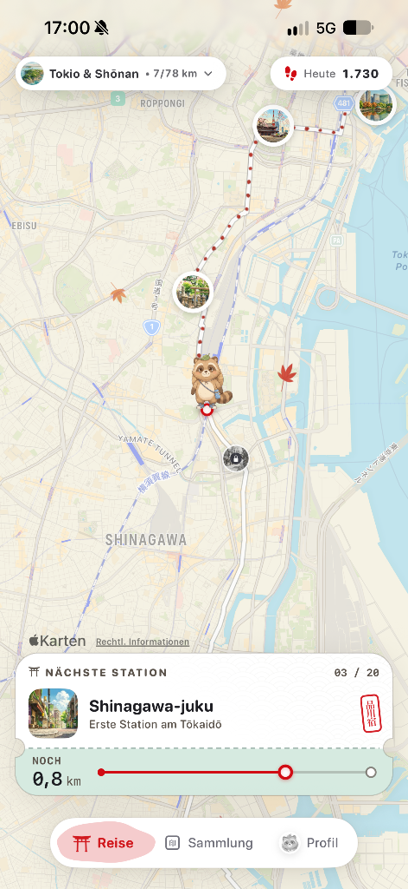
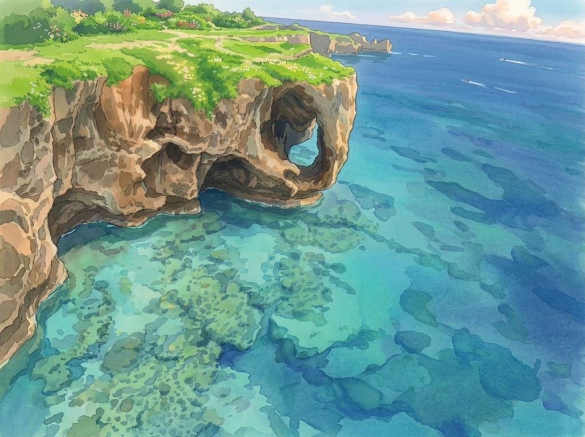
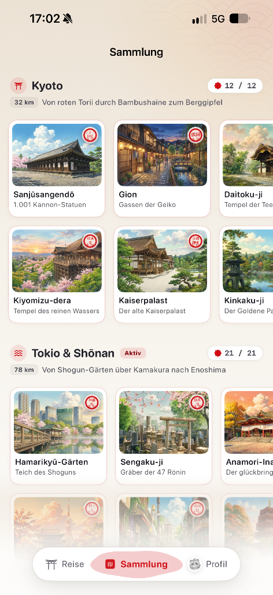
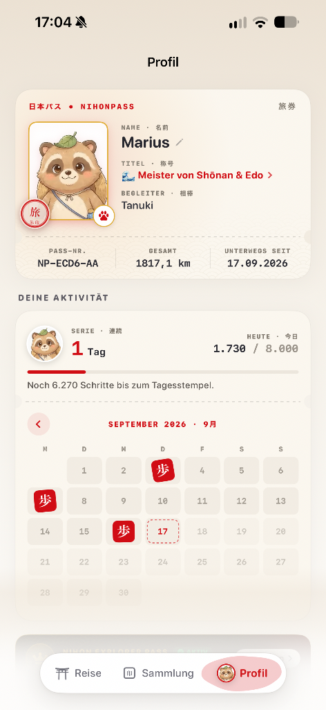
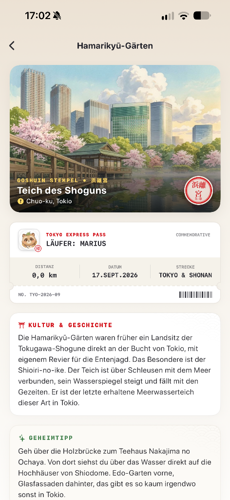
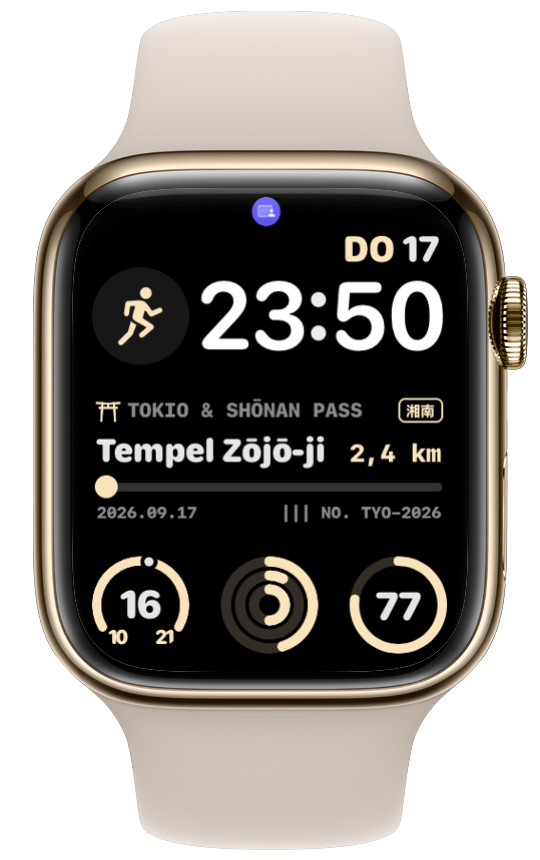

Jeder Schritt und jeder Spaziergang bringt dich auf alten Wegen durch Japan ein Stück weiter. Ganz ohne Leistungsdruck, ohne Pace und ohne Pulskurven: Jeder Spaziergang zählt.

Vom Bambuswald in Kyoto bis zu den Vulkanlandschaften auf Kyushu: Jede Route basiert auf echten historischen Pfaden und ist mit Fotografien und handverlesenen Kulturgeschichten hinterlegt.
„Von roten Torii durch Bambushaine zum Berggipfel“
„Von Shogun-Gärten über Kamakura nach Enoshima“

Explorer Pass OKINAWA · 沖縄„Vom Reich der Ryukyu-Könige in den Yanbaru-Urwald“
„Vulkane, heiße Quellen und alte Burgstädte“


Mit jedem erreichten Tagesziel stempelst du deinen Kalender mit dem roten 歩-Siegel ab. Am Monatsende siehst du schwarz auf weiß, wie viel du zu Fuß geschafft hast.
Standardmäßig 8.000 Schritte, aber frei wählbar. Erreichst du dein Tagesziel, wird der Tag mit dem roten 歩-Siegel besiegelt.
Sonntags mal nur auf der Couch gelesen? Völlig in Ordnung: Ein Ruhetag pro Woche unterbricht deine Serie bewusst nicht. Niemand muss jeden Tag rennen.
Wie in echten japanischen Tempeln sammelst du rote Hanko-Siegel und kleine Geschichten zu jedem erreichten Meilenstein.
Wie weit ist es noch bis zum nächsten Schrein, wie viele Schritte fehlen noch zum Tagesziel und wie steht deine aktuelle Serie? Ein kurzer Blick auf die Apple Watch genügt, ohne das iPhone aus der Tasche holen zu müssen. Vollkommen synchron mit deiner Reise.


Die 32 km lange Kyoto-Route kannst du dauerhaft komplett gratis gehen. Den Explorer Pass für alle weiteren Routen durch Japan kannst du 7 Tage lang in aller Ruhe kostenlos ausprobieren.
Nein, überhaupt nicht! Dein iPhone in der Hosentasche oder Jacke zählt deine Schritte über Apple Health völlig automatisch im Hintergrund. Wenn du eine Apple Watch hast, zählt sie natürlich auch mit.
Ja, komplett offline. Alle Routen, Karten, Begleiter und Geschichten sind direkt in der App auf deinem iPhone gespeichert. Du kannst auch im Funkloch oder im Flugmodus entspannt wandern.
Wenn du während der 7 Tage in den Einstellungen deiner Apple-ID kündigst, zahlst du keinen Cent. Und egal wie du dich entscheidest: Die gesamte Kyoto-Starter-Route bleibt für dich immer zu 100 % kostenlos erhalten.